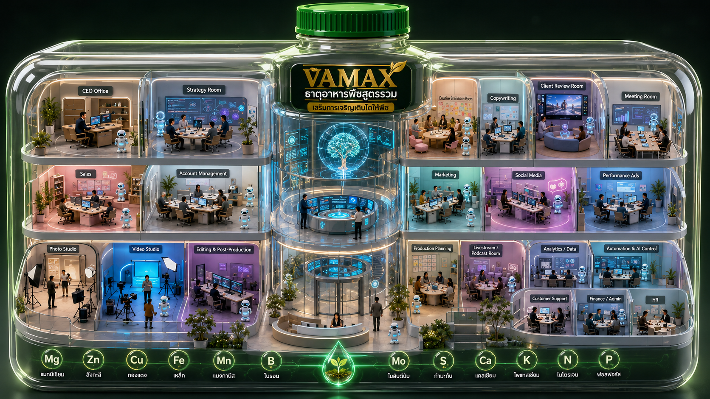

VAMAX Virtual Office
Executive KPI Monitoring Dashboard
ภาพสำนักงาน 3D + สถานะแผนกจาก Google Sheet

งานที่บันทึกวันนี้4
กำลังทำ3
เสร็จแล้ว0
ความคืบหน้ารวม45%
สถานะแผนก
วิจัยและตรวจสอบแหล่งข้อมูล67%กำลังทำ
ประเมินผลและ QC40%กำลังทำ
สร้างและดูแลสกิล0%กำลังทำ
ปล่อยงานและปฏิบัติการ0%ยังไม่เริ่ม
Source snapshot: Google Sheet บันทึกงานรายวัน · Business timezone: Asia/Bangkok · สถานะระบบ: SNAPSHOT / รอเชื่อม API สด